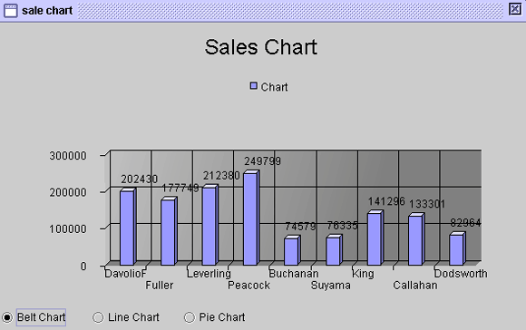

|
チャートコンポーネント (Chart component) チャートコンポーネントのランタイムミカニズム (Chart component runtime mechanical) チャートコンポーネントのデータ集団的なミカニズム (Chart component data aggregative mechanical) ダイナミックなチャートタイプ変更 (dynamically change chart type) Bufferedデータソース連結のチャートコンポーネント(binding buffered data source) フォーミュラget/setプロパティ (formula get/set properties)
チャートコンポーネントのランタイムミカニズム (Chart component runtime mechanical)
チャートコンポーネントはＭＵＬＴＩ−ＴＨＲＥＡＤコンポーネントで初期化された後に、チャートのデータ統計処理とイメージ作成は独自のＴＨＲＥＡＤにコントロールされ、他のコンポーネント実行に影響を与えません。それによって、ユーザはより素早く回答を得られます。
チャートコンポーネントのデータ集団的なミカニズム (Chart component data aggregative mechanical)
チャートコンポーネントの統計資料はデータソース連結の最初レコード（ＦＩＲＳＴＲＥＣＯＲＤ）から、行ごとに選び出され（ＦＩＬＴＥＲ）、プロセス処理、最後レコード（ＬＡＳＴＲＥＣＯＲＤ）までのです。行ごとにデータが統計される時、関連のｘ軸（ｘ−ＡＸＩＳ）、ｙ軸（ｙ−ＡＸＩＳ）、ｚ軸（ｚ−ＡＸＩＳ）をフォーミュラで設定しなければなりません。一般的にはｘ、ｙ軸は統計アイテムの分類でｚ軸にデータを載せるのです。デザインの異なることによってｘ、ｙ、ｚ軸に対応方式がフォーミュラとデータフィールドに分けられます。
統計データソースは学生成績，チャートの X 軸は姓名、Y 軸は科目、Z 軸は成績の方式で表します。 · データフィールド (by data field)：
データ構造 データソース名：student
チャートコンポーネントプロパティ設定
o データソース (data source)：student o X-フォーミュラ (X-axis)：{student:name} o データフィールド (by data field)：核選 (Checked) o Y-データフィールド： name 以外のすべてのフィールドを選択
· フォーミュラによる (by formula)：
データテーブルとデータ構造 データソース名：student2
統計図コンポーネント設定
o データソース (data source)：student2 o フィルター (filter)： フォーミュラでデータを選び出し，TRUEの場合，統計します。 o X-フォーミュラ (X-axis)：{student2:name} o フォーミュラによる (by formula)：選択 (checked) o Y-フォーミュラ：{student2:subject} o Z-フォーミュラ：{student2:score}
·
統計チャート
§ データソース (data source)：データソースの選択。 § フィルター (filter)：空白の場合 (blank) ，すべてのデータは統計されます。或いはフォーミュラは (formula) TRUEの時，データが統計されます。 § X-フォーミュラ (X-axis)：チャートX軸のデータ。 § グループデータ (data)：統計データはフォーミュラからかデータソースフィールドから (data field)の選択。
· フォーミュラによる (by formula)：統計データはフォーミュラから。 · データフィールドによる (by data field)：統計データはデータソースのフィールドから。
§ Y-フォーミュラ (Y-axis)：チャートの Y 軸のデータ。 § Z-フォーミュラ (Z-axis)：チャートの Z 軸のデータ。
§ Y-データフィールド (Y-record field)：統計フィールドの選択。
統計チャートプロパティ (Chart properties) § タイトル (title)：統計チャートのタイトル。 § チャート分類 (chart type)：統計チャートタイプ，１１種類が選択できます。
· Belt Chart Fancy · Belt Chart 2D · Belt Chart · Line Chart Fancy · Line Chart Fancy 2 · Line Chart 2D · Line Chart 2D 2 · Line Chart · Line Chart 2 · Pie Chart · Pie Chart 2D § マーク (legend)：マーク位置の選択。 § デフォルト値の転換 (data)： · X-Yデータ交換 (swap XY)：X軸とY軸データの交換。 · 四捨五入 (round)：データを四捨五入で表示。 §
数字 (value)：統計項目データの表示。
· なし (none)：表示しない。 · 值 (value)：実際の値を表示。 · パーセンテージ (percentage)：パーセンテージで表示。 § バック (wall)：バックの設定。
· バック (back wall)：バックの表示。 · 左牆 (left wall)：左バックの表示。 · 底 (bottom wall)：底の表示。 § 軸線タイトル (item label)：項目タイトルの表示。
· X 軸 (X-axis)：X軸項目タイトルの表示。 · Y 軸 (Y-axis)：Y軸項目タイトルの表示。 · Z 軸 (Z-axis)：Z軸項目タイトルの表示。 § 軸線度数 (axis-tick)： 軸度数表示の設定。
· X 軸 Cal：X軸度数の表示。 · Y 軸 Cal：Y軸度数の表示。 · Z 軸 Cal：Z軸度数の表示。 § 寸法の比率 (pie rate)：チャート大きさの調整。 § STRING大きさの比率： チャートとSTRING大きさの比例。 § チャート高さ：幅の比率：チャート高さと幅の比例。

ダイナミック的にチャートタイプ交換 (dynamically change chart type)
ランタイム
(runtime) の時に，デザインナーはユーザに統計チャートタイプ交換可能のインターフェースを提供することが可能です。
SetProp("統計圖元件名稱", "type", 類別代碼)
Ｂｕｆｆｅｒｅｄデータソース連結の統計チャート(binding buffered data source)
Ｂｕｆｆｅｒｅｄデータソースはフォームが初期化される時、通常はデータレコードを有しないので、他のイベントを通してデータを載せます。チャートコンポーネントはデータ集団的なプロセスとイメージ化が独自のＴＨＲＥＡＤを有するため、Ｂｕｆｆｅｒｅｄデータソースにデータを載せるイベント作業がまだ完全に終わっていないのに、チャートコンポーネントのＴＨＲＥＡＤが先に実行してしまったことが考えられます。そのため、Ｂｕｆｆｅｒｅｄデータソースにデータを載せるイベントの最後に正確なデータを得られるため、必ず再度にフォーミュラでチャートコンポーネントに統計データをリロードさせるイベントを設計しなければなりません。 · SetProp("チャートコンポーネント名", "revalidate", 1)：データを再度統計。 · SetProp("チャートコンポーネント名", "repaint", 1)：元のデータに基づき、再度描く。 · SetProp("チャートコンポーネント名", "repaint", 2)：元のデータに基づき、再度即時に描く。
フォーミュラget/setプロパティ (formula get/set properties) SetProp("コンポーネント名", "プロパティ", 値) ：プロパティ設定。 SetProp("コンポーネント名", "プロパティ", 値1, 値2)：プロパティ設定。 GetProp("コンポーネント名", "プロパティ")：プロパティの読み取り。
Copyright © 2001~ 2004 Probe Technology . All Rights Reserved. Questions, comments, and suggestions to Service@probe.com.tw |
|||||||||||||||||||||||||||||||||||||||||||||||||||||||||||||||||||||||||||||||||||||||||||||||||||||||||||||||||||||||||||||||||||||||||||||||||||||||||||||||||||||||||||||||||||||||||||||||||||||||||||||||||||